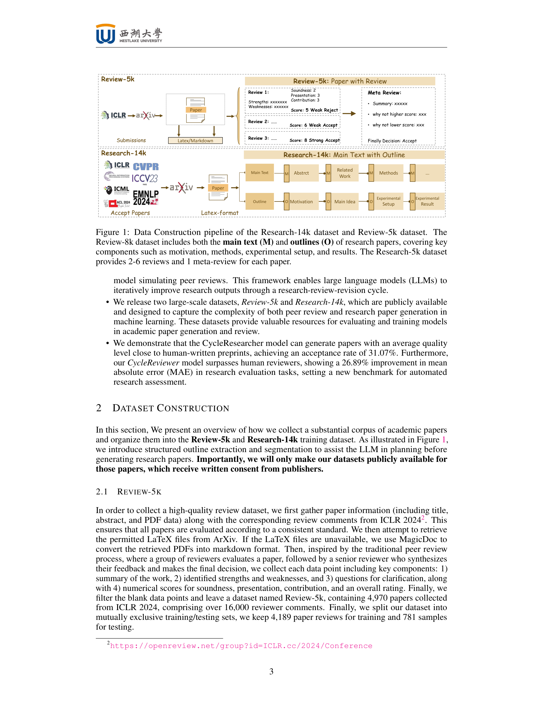

Figure 1
오픈소스 LLM을 활용하여 과학 연구의 전체 생명주기(문헌 조사 - 논문 작성 - 피어 리뷰 - 수정)를 자동화하는 반복적 강화학습 프레임워크를 제안한다. 정책 모델(CycleResearcher)이 연구 논문을 생성하고, 보상 모델(CycleReviewer)이 피어 리뷰를 시뮬레이션하여 피드백을 제공하며, 이 과정을 Iterative SimPO로 반복 최적화한다. CycleReviewer는 개별 인간 리뷰어 대비 MAE 26.89% 개선을 달성했고, CycleResearcher-12B가 생성한 논문은 시뮬레이션 리뷰에서 평균 5.36점(프리프린트 5.24점 초과, 학회 수락 논문 5.69점에 근접)을 기록했다.
총평: 연구-리뷰-수정 사이클을 강화학습 프레임워크로 공식화한 독창적 시도이나, 실험 결과를 날조한 논문이 높은 평가를 받는다는 점에서 CycleReviewer의 평가 신뢰성에 근본적 의문이 제기된다.